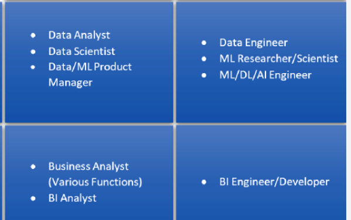

Data is the New Oil & Analytics is the combustion engine
Refining Data
to remove valuable insights from it
Analytics serves as a catalyst for innovation by providing a comprehensive understanding of the data landscape.
Through meticulous analysis of customer behavior, market trends, operational patterns, and competitive intelligence,
organizations gain invaluable insights that inform their innovation strategies.
Analytics empowers organizations to identify emerging trends, predict future behaviors, and anticipate potential challenges.
It allows them to test new ideas, refine existing products, and optimize their operations,
all while navigating the ever-changing business landscape.
By developing expertise in data analysis, visualization, and predictive modeling,I can contribute to the innovation engine that shapes the future.
Let's harness the power of analytics
to unlock the boundless potential of data and drive innovation that transforms our world for the better.
Sales analysis using Excel
This repository contains an analysis of a dataset from a famous chocolate store. The dataset includes information on customer name,their demographics, products purchased,units of product buyed and its amount.
I have used tables,functions,pivot tables,charts on this dataset providing insights into product popularity,most important sales person and sales trends across each country.
This is a Python & SQL data analysis project made at a beginner level. It contains two tables items and order on which I have performed analysis by using Python pandas library and SQL queries. I have analyzed the average order value for each category .
I have also identified frequently purchased items together to suggest complementary items and increase order value.
This is a dataset of the famous YouTuber Alex Freberg obtained using web scraping.
I have done review and analysis of the dataset finding the most played video,how many distinct months has Alex posted videos and many more questions...
Analysing items and orders using SQL
Danny Diner is famous restuarant in Singapore. The owner wants to use the data to answer a few simple questions about his customers, especially about their visiting patterns, how much money they’ve spent and also which menu items are their favourite..
Superstore is a fictional retail company based in the United States.The data is available in Excel format and offers different perspectives, including overview, segment, region, and product snapshot. They specialize in selling furniture, office supplies, and technology products .I identified the weaknesses and opportunities within their business to enhance their business growth,profitability by creating insightful PowerBI dashboard and reports.

It is a dataset that presents an analysis of a survey conducted among data professionals.The dataset contains responses from data professionals in various fields, detailing their career journeys and preferences.I have created a comprehensive dashboard using Power BI, which showcases the results of the survey and provides fascinating insights into various aspects of the industry
Analysis using Power-BI and validation using SQL Server
It is a dataset that is manually created and generated using Python Faker and Random libraries by studying the automotive industry in USA. The dataset contains different dimension tables like car-dim,customer-dim ,dealer_dim , salesperson-dim, carfeature-dim and fact table sales_fact . I have presented the data insights and overview of sales,dealers and customers in different cities & states of USA as well as have done sales forecasting in the USA car market by creating different reports and validated the report using SQL Server.
Hospital Analysis using Power-BI
It is a dataset which I got by reference of my friend through Maven Analytics. The dataset provides a comprehensive snapshot of the hospital’s operations, including patient demographics, financials, service utilization, and outcomes. The dashboard I have curated provides a detailed overview of patient encounters, financials, and demographic breakdowns, showcasing our commitment to transparency and data-driven decision-making in healthcare.